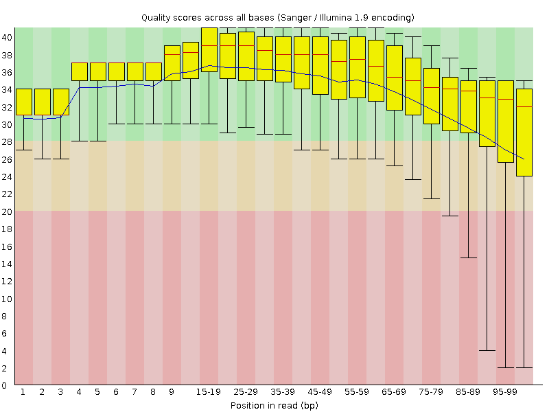
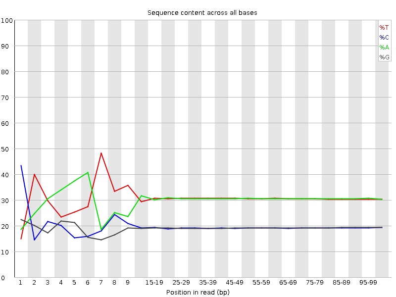
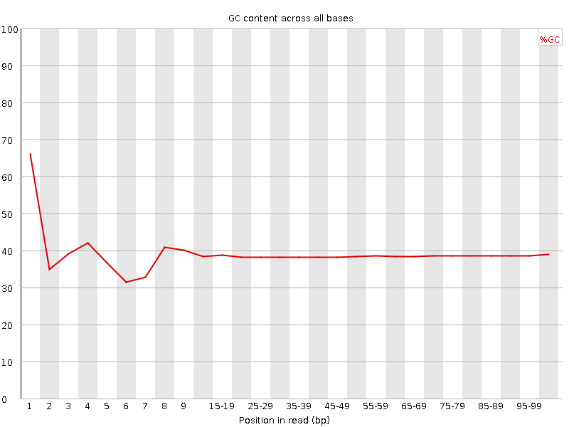
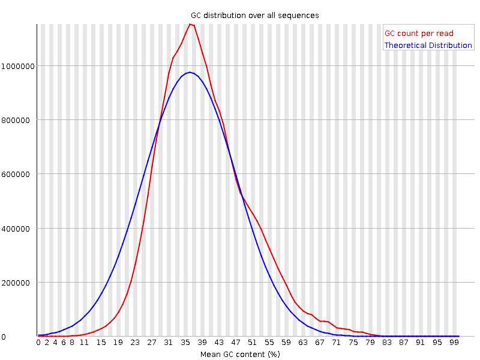
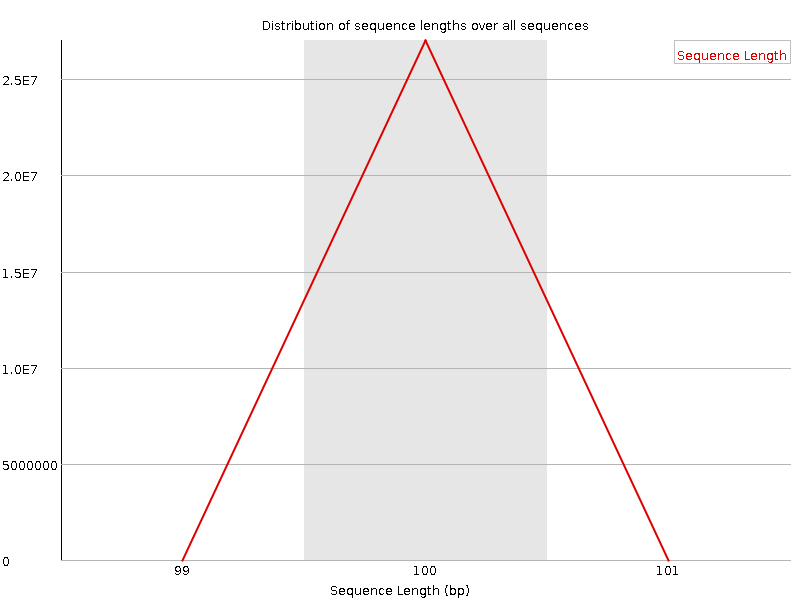
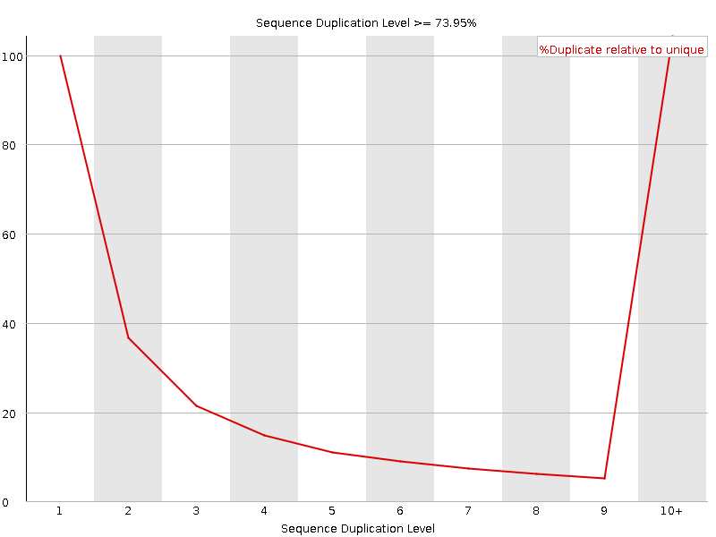
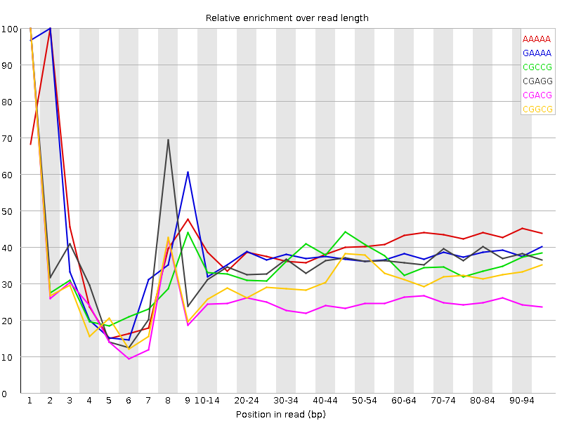

![[OK]](Icons/tick.png) Basic Statistics
Basic Statistics
| Measure | Value |
|---|---|
| Filename | t3.2.fq |
| File type | Conventional base calls |
| Encoding | Sanger / Illumina 1.9 |
| Total Sequences | 26996765 |
| Filtered Sequences | 0 |
| Sequence length | 100 |
| %GC | 38 |
Per base sequence quality

Per sequence quality scores

![[FAIL]](Icons/error.png) Per base sequence content
Per base sequence content

Per base GC content

![[WARN]](Icons/warning.png) Per sequence GC content
Per sequence GC content

Per base N content

Sequence Length Distribution

Sequence Duplication Levels

Overrepresented sequences
No overrepresented sequences
Kmer Content

| Sequence | Count | Obs/Exp Overall | Obs/Exp Max | Max Obs/Exp Position |
|---|---|---|---|---|
| AAAAA | 16381815 | 2.3835156 | 5.8789506 | 2 |
| GAAAA | 8449800 | 1.9462945 | 5.1172385 | 2 |
| CGCCG | 1345785 | 1.8820711 | 5.285519 | 1 |
| CGAGG | 2077565 | 1.8772693 | 5.1978273 | 1 |
| CGACG | 2063765 | 1.8438402 | 7.2932224 | 1 |
| CGGCG | 1204880 | 1.7041706 | 5.4527726 | 1 |
| CGCGG | 1165680 | 1.6487265 | 5.736743 | 1 |
| CTCGA | 2900915 | 1.6292229 | 8.182845 | 1 |
| TCGAG | 2852660 | 1.6203336 | 5.1044397 | 7 |
| CTGGA | 2841320 | 1.6138923 | 6.487405 | 1 |
| CGAGA | 2711895 | 1.5478846 | 5.205299 | 1 |
| CTTTT | 6926250 | 1.5470564 | 5.9212294 | 1 |
| CTCCA | 2774910 | 1.5409393 | 6.5294633 | 1 |
| CGCGA | 1714215 | 1.5315399 | 6.0746665 | 1 |
| ATCGA | 4180625 | 1.4999936 | 5.562405 | 6 |
| CGCCA | 1697905 | 1.4999181 | 5.757403 | 1 |
| CTTCG | 2579625 | 1.4417527 | 6.066977 | 1 |
| CGATC | 2563765 | 1.4398714 | 5.146598 | 4 |
| CTCGT | 2564230 | 1.4331484 | 6.9865184 | 1 |
| CCGGC | 1016075 | 1.420974 | 5.5325503 | 1 |
| CTTCA | 3983375 | 1.4063036 | 5.341311 | 1 |
| CTGGC | 1555105 | 1.3826474 | 5.149668 | 1 |
| CTCGG | 1531100 | 1.3613046 | 7.97703 | 1 |
| CTCGC | 1528285 | 1.3435295 | 6.0693307 | 1 |
| CGAAA | 3549270 | 1.2796717 | 5.529109 | 1 |
| GAATC | 3562500 | 1.2782123 | 5.622865 | 4 |
| CTTGA | 3509615 | 1.2531306 | 5.245901 | 1 |
| CTTGG | 2200600 | 1.2438962 | 5.466204 | 1 |
| AATCG | 3392820 | 1.2173319 | 5.142504 | 5 |